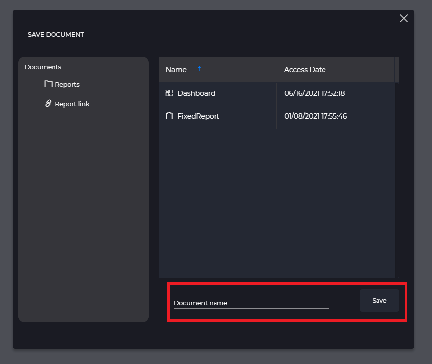
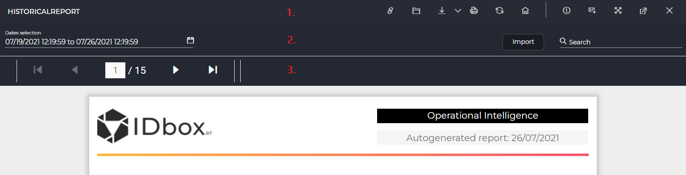

Reports
- 1 Introduction
- 2 Creation of reports
- 2.1 Initial configuration
- 2.1.1 Fast start
- 2.1.2 Customization wizard
- 2.2 Document save
- 2.1 Initial configuration
- 3 Display of reports
- 4 Report design
1. Introduction
Reports allow you to generate customized visualizations of events or facts occurring in a given data set over a selected date range. This section shows how to create, design and visualize them through IDboxRT.
2. Creation of reports
Report creation allows you to generate a document stored in IDbox that can later be viewed or edited.
2.1 Initial configuration
To start creating a report, there are two access methods described below.
2.1.1 Fast start
If we already have the desired set of signals previously selected in the “Signal selection” tool, using this option is the easiest way to create a report. As shown in the following image, it is only necessary to access the selection from the top bar of the web, set the desired date range and click on the “Reports” button.

2.1.2 Customization wizard
If further customization is desired, the report creation wizard allows you to enter a more specific configuration in a guided manner. To do this, access the reports section as shown in the image below. If a report is already open, it is also necessary to click on “New report”.

As shown in the following image, the report creation wizard allows you to navigate through three steps, described below, to complete the configuration.

- Report type: allows you to select a custom report that has been previously implemented and loaded. The default report type is always available and includes as data sources the signal(s) and historical(s) information as well as the “start date” and “end date” parameters.
- Signals: at this point it is possible to include the desired signals in the new report using the signal selector.
- Report configuration: allows you to select the historical mark for the document as well as the interpolation, statistics and units settings for each signal.
- Dates: through the date selector it is possible to define the time interval on which the report will be based, either by providing a fixed range that is permanently maintained or a dynamic range that is recalculated for each opening of the report.
2.2 Document save
Once the report is configured with one of the two methods presented above, the creation ends with the document save. To do this, entering a name is needed - and optionally its location - in the dialog shown below.

3. Report display
Documents that have been saved can be accessed later from the IDboxRT explorer. Once located, it is sufficient to click on the document or click on the “Open” action.

After this action, the report will be displayed on the screen with the different parts shown in the image and described below.

- Actions: allows you to consult the title of the report, and make use of different operations: generate link, open document, download and export report, print report, refresh report, set as home page, access documentation, create a subscription, full screen, extract screen and close document.
- Tools: allows you to modify the date range (start and end), import an updated version of the report design or perform a search.
- Viewer: offers a view of the rendered report according to the previously saved layout.
4. Report design
The designer allows you to customize the report document by adding, deleting or modifying the available components on the canvas. The source file, which can be exported from the report visualization, follows the RDL/RDLC definition and is compatible with the following editors:
- Bold Reports Standalone Designer: Free editor distributed by Bold Reports (Syncfusion). Compatible versions less than or equal to 3.1.43. >> Available on the Bold Reports website
- Microsoft RDLC Report Designer: Free editor distributed by Microsoft. >> Available on the Microsoft download center
Although each designer usage may vary, the following areas are generally identified as shown in the following image and described below.

- Actions: along this panel it is possible to apply different operations such as undo, redo, save, open document, preview report or display settings.
- Components: all the components available for the report to be added are listed here and its usage described in the documentation of each editor.
- Layout: it is divided into several sections on which components can be added later by dragging them from the list. Once added to the canvas they can be moved to create the desired layout and design.
- Properties: each of the selected elements from the canvas has a series of properties that can be adjusted in the right panel to modify their style, behavior or nomenclature.